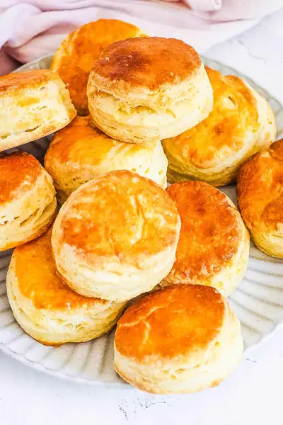

Biscuits Without Baking Powder

Ingredients
- 3 cups all-purpose flour
- 1½ tsp baking soda
- 1 tsp cream of tartar
- ¼ tsp salt
- 1 cup butter (chilled in the fridge or the freezer)
- 1¼ cup milk (full cream)
- 1 egg (optional, beaten)
Steps
- Preheat the oven to 400 degrees Fahrenheit (200 C). Line a baking sheet with parchment paper.
- In a mixing bowl whisk together the flour, baking soda, cream of tartar and salt. Set aside.
- Using a box grater, grate the chilled butter. Add to the flour mixture.
- Using your hands, rub the butter into the flour until it resembles coarse bread crumbs.
- Add the milk and stir to form a dough, being careful not to over mix the dough.
- Turn the dough onto a floured work surface and gently knead to combine.
- Using your hands or a rolling pin, roll the dough to approximately 2 inches thick.
- Fold the dough over and roll it out again. Repeat this process 3 more times.
- Using a 2½ inch round biscuit cutter, cut 18 biscuits from the dough, place them onto the prepared tray.
- Optional: Whisk the egg and brush over the tops of each biscuit, this will give a lovely golden top to the biscuits.
- Bake for 20 minutes or until the tops are a lightly golden brown.
- Remove and allow to cool completely.
Recipe by Anjali Shah · The Picky Eater, from The Picky Eater. Saved here for personal use; the original has the full notes, tips and photos. Open original